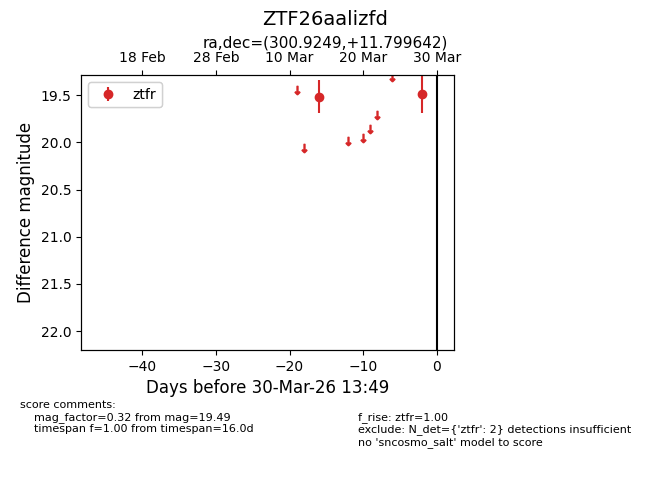
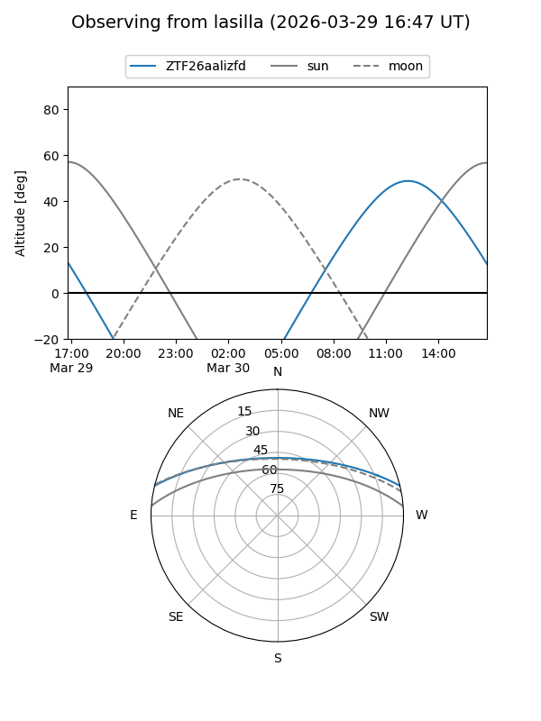
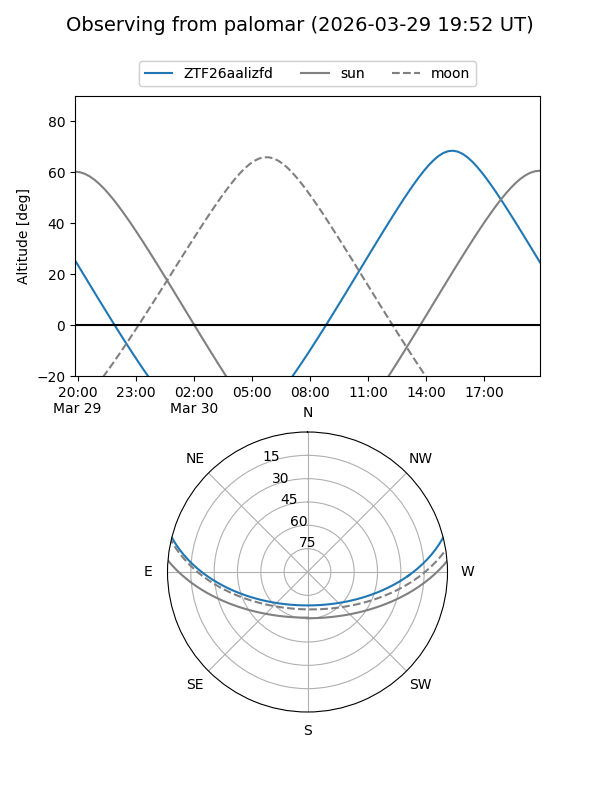

ZTF26aalizfd
Target ZTF26aalizfd at 2026-03-30 13:53
Aliases and brokers:
FINK: link
Lasair: link
ALeRCE: link
alt names
ZTF26aalizfd (ztf,fink_ztf)
Coordinates:
equatorial (ra, dec) = 300.9249,+11.79964
equatorial (HMS+DMS) = 20:03:41.97,+11:47:58.71
galactic (l, b) = (51.9303,-10.18991)
Flags:
Photometry:
last ztfr=19.49
2 ztfr detections
Lightcurve

Visibility


Additional plots